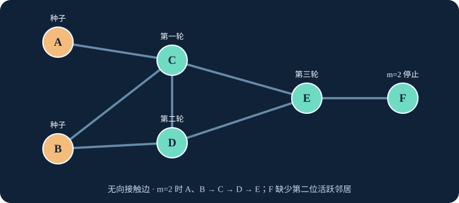

SOCIAL CONTAGION / THRESHOLD CASCADES
第13章 信息与谣言传播
消息可以被送达，但被看见、相信与采纳是不同的状态。
一条远距离联系，为什么有时是捷径，有时却不起作用？
收到一条信息，不等于接受一个观点或采纳一项行动。对于某些简单消息，一次有效接触就足以触发传递；对于需要信任与社会证明的行为，一个人可能希望先看到两位朋友都采用，才愿意行动。连接的存在和影响的门槛共同决定扩散范围。
这里研究的是传播机制，而非判断信息内容真假。传播迅速的消息并不因此更可信；谣言一词描述的是待核实的信息状态，不能凭网络拓扑判别具体文本的真实性。

三种常被混称的“传播”
| 机制 | 节点何时变化 | 会不会回退 | 适合表达 |
|---|---|---|---|
| 单接触传播 | 接到一次成功接触 | 依具体模型 | 简单信息触达、某些感染事件 |
| 阈值采纳 | 同时或累计看到足够多邻居采纳 | 本章设定中不会 | 社会强化、规范采纳 |
| 谣言状态模型 | 可能区分未知者、传播者和停止传播者 | 取决于传递/停止规则 | 消息扩散及传播意愿变化 |
第二行的“至少两位邻居确认”是复杂传播的一种具体模型，但复杂传播不能泛化为所有社会行为都必须有两个来源。真实世界中也会存在曝光次数、来源独立性、意见强度、成本、异质门槛等差异。
确定性阈值：每一轮从旧状态统一计算
令 xᵥ(t) 为节点 v 在离散时刻 t 是否已经采纳，取值 0 或 1；N(v) 是它的所有邻居。每位未采纳者在看到至少 m 位不同采纳邻居后采纳，一旦采纳则保持采纳。这个模型按邻居绝对人数设门槛，而不是按占邻居比例设门槛。
同步更新至关重要：在 t→t+1 的计算中，不能让本轮刚刚变化的 C 立即帮助 D，再让 D 立即帮助 E。否则会把同一轮中的局部计算顺序误写成真实扩散速度，结果依赖遍历顺序而不是模型定义。
同一张图，从一个邻居到两个邻居
- 初始 t=0：只有 A、B 已采纳。其他四节点尚未采纳。
- 门槛 m=1：t=1 时 C 和 D 同时采纳；t=2 时 E 采纳；t=3 时 F 也采纳，最终六节点全部采纳。
- 门槛 m=2：t=1 只有 C 采纳；t=2 D 因 B 与 C 采纳；t=3 E 因 C 与 D 采纳；F 只有 E 这一位邻居，因此永久停在未采纳状态。
切换采纳门槛，并拖动时间轴
t=0：A、B 已采纳；C、D、E、F 尚未采纳。
这里的“两个邻居”指不同节点；同一个来源重复转发两次，不应被误计为两位独立邻居。若采用比例门槛而非人数门槛，F 只连接 E，看到 E 采纳时比例就达到 100%，结果可能不同，必须分别说明模型。
弱关系与社会强化之间的张力
跨越远距离群体的弱关系能把一个消息送进新社群，但若新社群中的个人必须同时看到多位身边人行动，单一桥接联系人可能无法触发继续扩散。Centola 与 Macy 讨论了这种复杂传播下长距离关系的局限；不能因此得出“弱关系在所有传播中都不好”的结论。
Watts 的随机网络级联模型强调，小的局部触发有时可通过阈值依赖产生大规模群体响应，但级联存在特定网络参数与门槛区间。是否形成全球级联要依赖种子分布、度结构、门槛分布、接触方式等，不能仅从平均度或一张示意图推定。
代码：按同步规则逐轮得到两条可复核轨迹
运行环境：Python 3.11+、NetworkX 3.3+。实验不使用外部数据或随机数。把每轮结果和独立列出的预期集合比对，能捕获“原地更新”造成的错误。
import networkx as nx
g = nx.Graph([("A","C"), ("B","C"), ("B","D"),
("C","D"), ("C","E"), ("D","E"), ("E","F")])
seeds = {"A", "B"}
def cascade(threshold, steps=4):
active = set(seeds)
history = [set(active)]
for _ in range(steps):
added = {v for v in g if v not in active
and len(set(g.neighbors(v)) & active) >= threshold}
active = active | added
history.append(set(active))
return history
trace_simple = cascade(1)
two = cascade(2)
assert [len(x) for x in trace_simple] == [2,4,5,6,6]
assert [len(x) for x in two] == [2,3,4,5,5]
assert two[1] == {"A","B","C"}
assert two[2] == {"A","B","C","D"}
assert "F" in trace_simple[-1] and "F" not in two[-1]
print("m=1:", trace_simple, "m=2:", two)这是固定门槛、永久采纳、同步更新模型的计算验证，不是对任何具体谣言、平台传播算法或真实用户意愿的预测。
哪些行为不能直接由图推断？
一个人是否看到、相信或采纳消息可能由算法推荐、时间窗口、个人偏好、来源可信度与线下交流共同决定。阈值模型不含“信息真伪”变量，也无法自动区分接触、阅读、转发与信念变化；这些需要观测定义与单独数据。对于真实数据，最好区分可观察的转发行为和无法直接观察的信念。
模型来源与论文
- Granovetter (1978), Threshold Models of Collective Behavior，American Journal of Sociology。
- Watts (2002), A simple model of global cascades on random networks，PNAS。
- Centola & Macy (2007), Complex Contagions and the Weakness of Long Ties，AJS 113:702–734。
传播不只取决于图，还取决于规则。下一章把节点从“采纳/未采纳”扩展成策略选择：何时合作，何时模仿邻居？